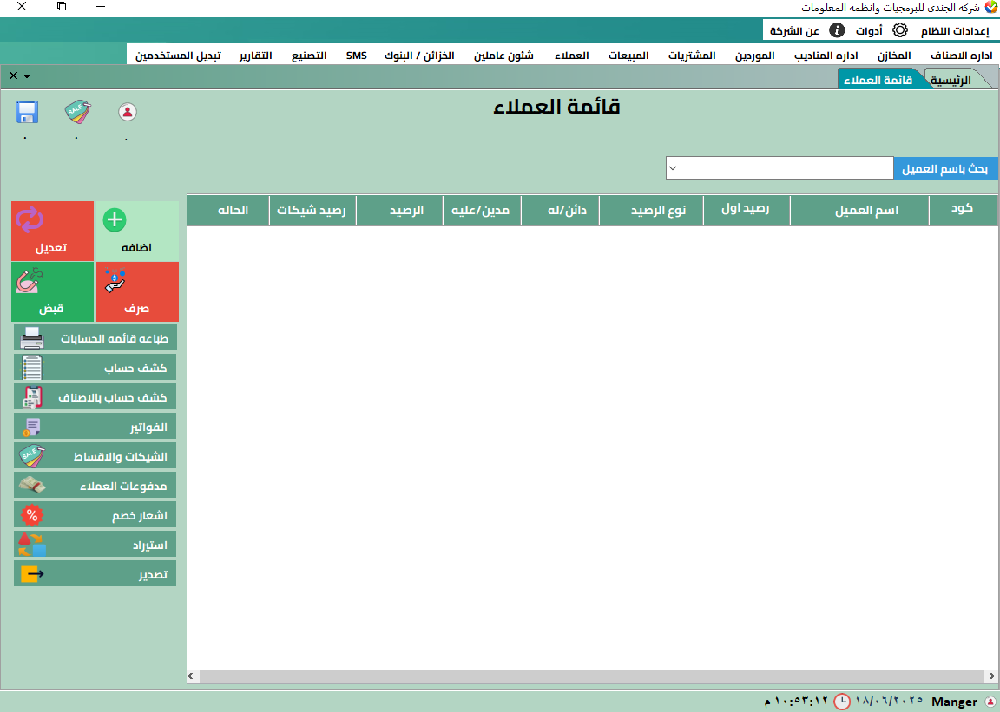
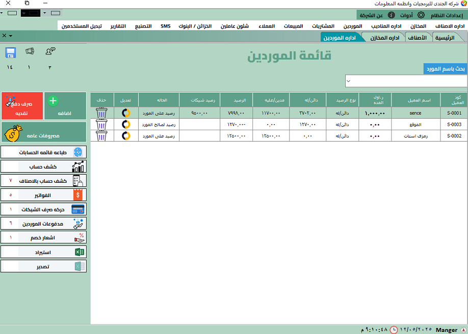

وظائف البرنامج الرئيسية بالشرح والصور
📦 إدارة المخازن والمبيعات
تحكم في حركة الأصناف، الكميات، الأسعار، المخزون الفعلي والمتاح، والفواتير المرتبطة. إمكانية طباعة باركود لكل منتج وتتبعه.

👥 إدارة العملاء والموردين
أنشئ قاعدة بيانات كاملة لكل العملاء والموردين، وسجل كل الفواتير، المرتجعات، المدفوعات، والرصيد الحالي تلقائيًا.




🧑💼 الحضور والانصراف وربط البصمة
يتيح لك البرنامج تسجيل الحضور والانصراف يدويًا أو تلقائيًا عبر أجهزة البصمة، مع حساب عدد ساعات العمل والتأخير والانصراف المبكر.

📊 التقارير وتحليل الأداء
اطلع على تقارير مفصلة لجميع أقسام النشاط مثل الربحية، العملاء، المبيعات اليومية، ومقارنة الأداء بين الفروع.